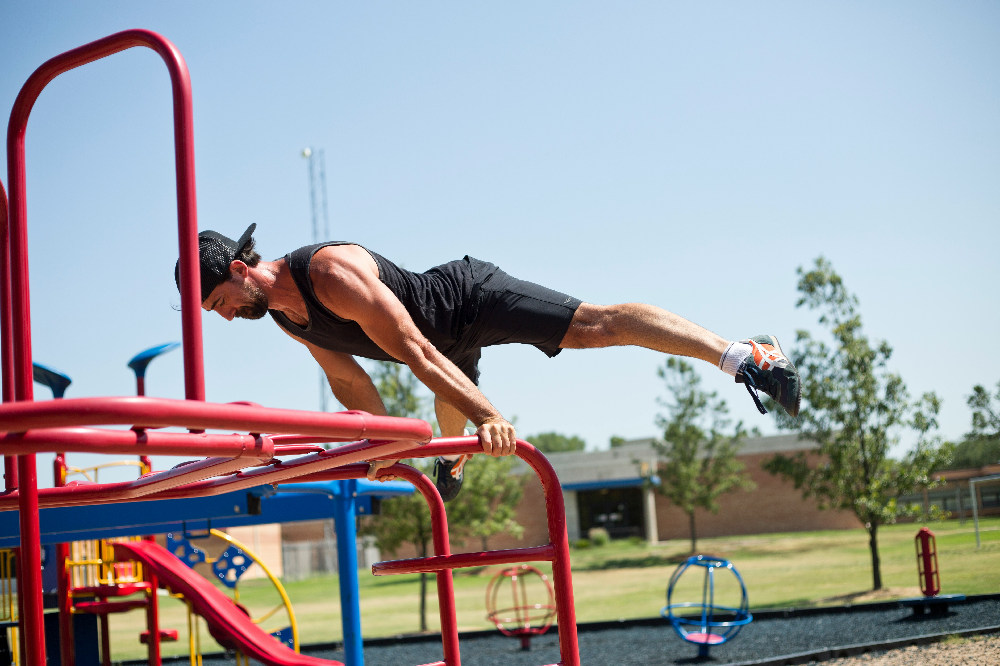

The planche is an advanced calisthenics move that involves balancing your body on your hands while keeping your body parallel to the ground. In the planche, the legs are lifted off the ground, and the body stays in a straight line, supported only by the hands.
Easy
Planche LeanMedium
Planche TuckHard
Planche Advanced TuckVery Hard
Planche Band-Coach Sommers
Sign up for our product by clicking the button right over there!